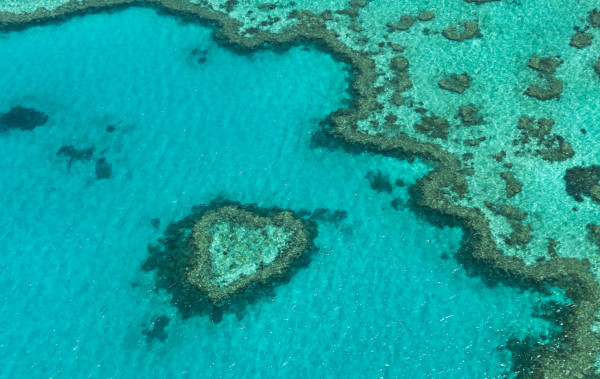
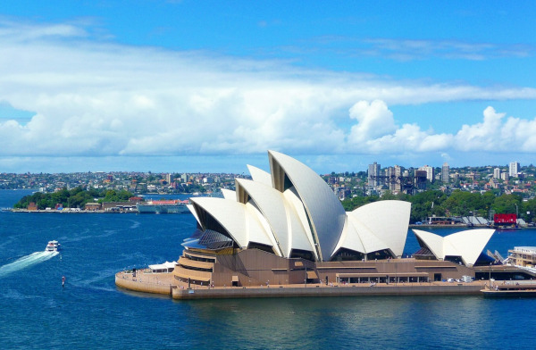
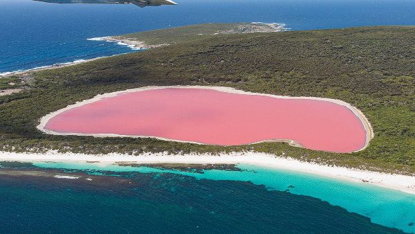
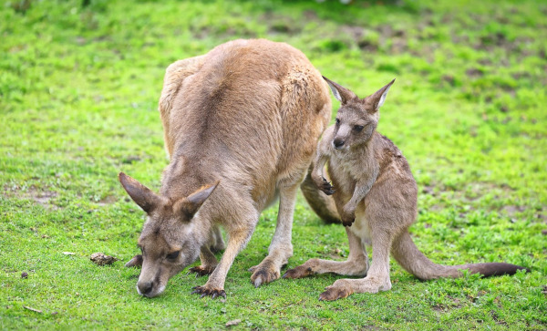
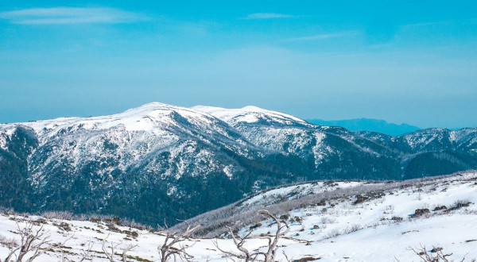

Austrália: Um Destino de Aventuras e Maravilhas Naturais
A Austrália, um país localizado na Oceania, é uma terra de contrastes e maravilhas naturais que cativam viajantes de todo o mundo.
Com uma extensão que abrange desde as montanhas geladas da Tasmânia até as praias ensolaradas da Grande Barreira de Coral, a Austrália oferece uma variedade de paisagens, ecossistemas e culturas que desafiam a imaginação e encantam a todos que o exploram. Desde as grandes metrópoles até as comunidades rurais que preservam tradições milenares, a Austrália é um destino que oferece uma experiência de viagem única e inesquecível.
Viajar pela Austrália é uma jornada através de contrastes fascinantes. Você pode passear pelas ruas animadas de Sydney, explorar os parques nacionais de Uluru e Kakadu, ou desfrutar de um mergulho nas águas cristalinas de Perth. A diversidade cultural e natural da Austrália oferece uma experiência enriquecedora, onde cada dia pode trazer novas descobertas e aventuras.
Documentos necessários
É necessário tirar um visto para visitar a Austrália, independentemente do objetivo de sua viagem. Então a primeira coisa a se fazer, depois de obter o passaporte, é solicitar seu visto.
Moeda
A moeda da Austrália é o dólar australiano (AUD). Cartões de crédito são amplamente aceitos em todo o país, mas ter algum dinheiro em espécie é útil, especialmente em áreas mais remotas. A gorjeta não é obrigatória, mas é apreciada em restaurantes e por serviços de táxi.
Idioma e comunicação
O inglês é a língua oficial da Austrália, e os australianos são conhecidos por seu sotaque distinto e expressões coloquiais. Algumas palavras podem ser diferentes do inglês britânico ou americano, mas o país é bastante acessível para falantes de inglês.
Melhor época para visitar
A Austrália tem climas variados, então a melhor época para visitar depende da região. O verão (dezembro a fevereiro) é ideal para as praias, especialmente nas cidades costeiras e em Queensland, mas pode ser muito quente no Outback. O outono (março a maio) e a primavera (setembro a novembro) oferecem temperaturas mais amenas e são ótimas estações para explorar o país de forma confortável.
Lugares para conhecer
1. A Grande Barreira de Corais

Fonte: Pexels
A Grande Barreira de Corais é uma imensa faixa de corais localizada em Queensland no nordeste da Austrália.
Para conhecer este patrimônio natural australiano, é possível mergulhar com os peixinhos, tartarugas e outras criaturas marinhas que vivem por lá. Também é possível vê-la de cima, através de um passeio de helicóptero sobrevoando o maior ser vivo do planeta.
Para mergulhar por lá, existe um passeio de catamarã saindo da cidade de Cairns.
2. Opera House

Fonte: Pixabay
O Opera House de Sidney é um dos símbolos e cartão postal da Austrália. Viajar para o país dos cangurus e não ir lá é como vir ao Brasil e não ir ao Cristo Redentor.
Com arquitetura marcante, o edifício chama atenção por sua beleza às margens da Baía de Sidney. E se você quer saber o que fazer na Austrália, assista a um espetáculo nesse lugar lindo e icônico. Além de toda atividade cultural com shows e espetáculos, é muito bacana até mesmo só apreciar toda sua beleza.
3. O lago cor de rosa

Esse incrível lago de coloração rosa, o Pink Lake, fica localizado entre as cidades de Melbourne e Adelaide, no sul da Austrália. Ele possui essa cor devido a um pigmento secretado por algas microscópicas. A intensidade do rosa varia com a quantidade de água do lago. Quando o lago está mais seco, mais luz é refletida a partir do sal cristalizado branco, o que reduz o impacto do rosa.
Existem no mundo alguns desses lagos na Austrália. O mais famoso fica no sudoeste do país, próximo a Perth
4. Cangurus em Southern Highlands

Fonte: Pixabay
Impossível pensar nos lugares para conhecer na Austrália sem lembrar dos cangurus. Esses marsupiais são o símbolo do país e são simpáticos, apesar de poderem ser bastante agressivos ao se sentirem ameaçados.
Um ótimo local para avistá-los soltos é nas Southern Highlands, onde além dos cangurus você poderá avistar os vombates também.
5. Alpes

Os alpes australianos são compostos pela maior cadeia montanhosa do país. A atração aqui está definitivamente no inverno quando os picos ficam cobertos de neve e as estações de esqui estão abertas.
Os alpes ficam na divisa entre os estados de New South Walles, Victoria e Australian Capital Territory. Nesses territórios, existem vários parques com excelentes trilhas e atrações, além das estações de esqui. Fora do inverno, as trilhas que percorrem as montanhas são muito legais e você com certeza vai ter um passeio maravilhoso por elas.